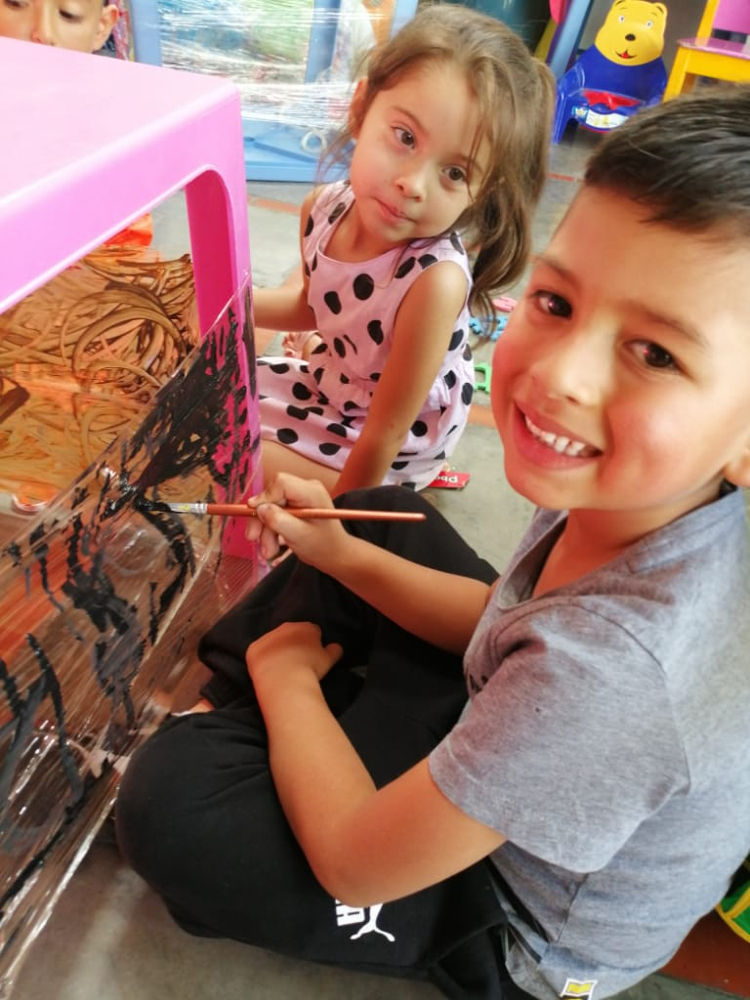
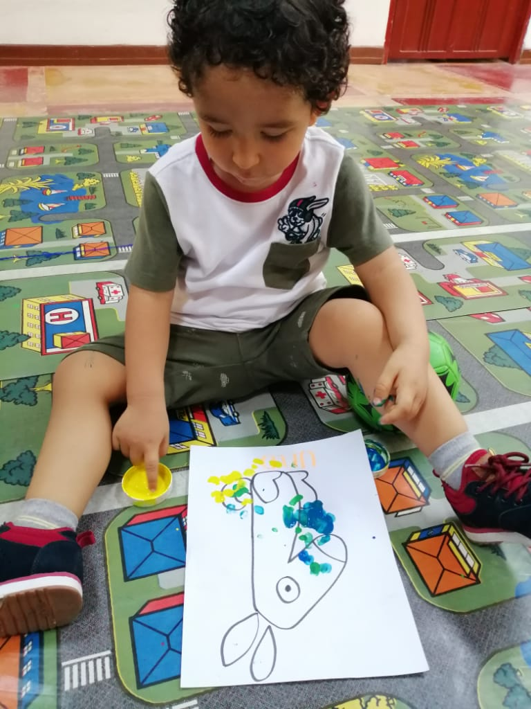
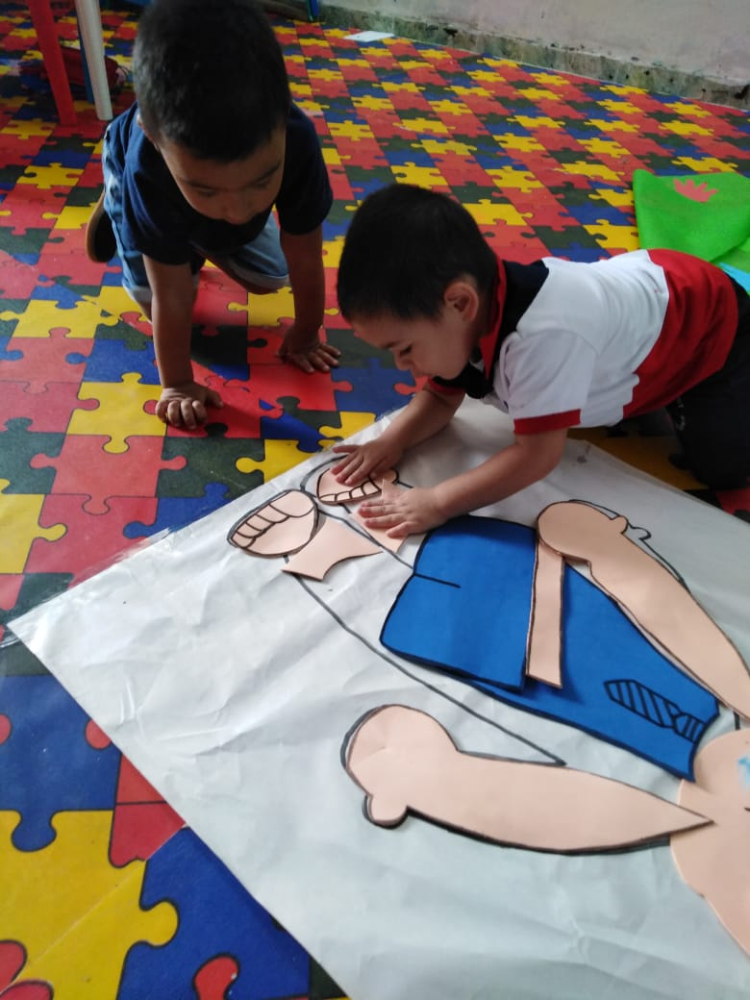
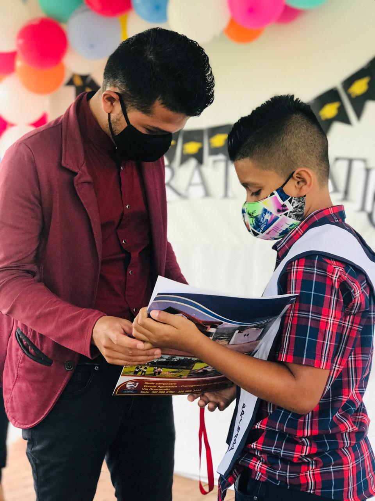
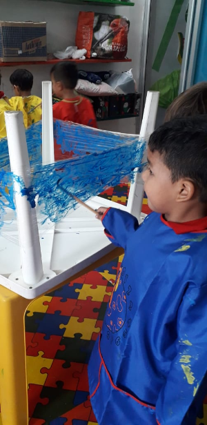
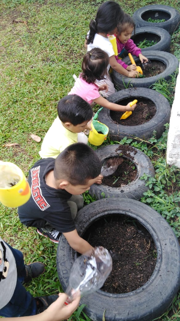
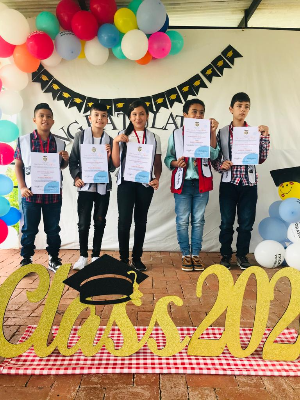
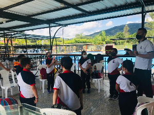
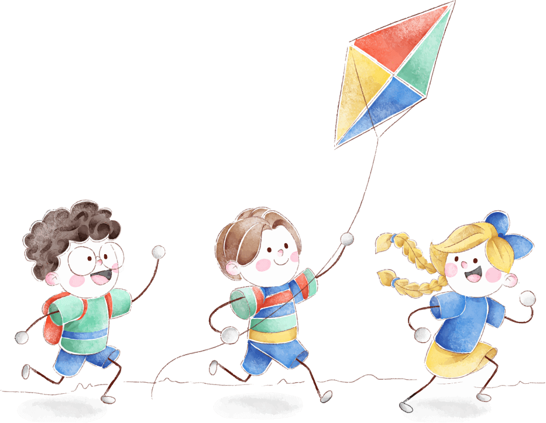

Caminadores
Los niños tienen la experiencia de un mundo por descubrir sus gustos y socializar con sus compañeros, por medio de actividades lúdicas y juegos para tener un aprendizaje divertido.
1 - 2 Años






Información de los grados escolares.

Los niños tienen la experiencia de un mundo por descubrir sus gustos y socializar con sus compañeros, por medio de actividades lúdicas y juegos para tener un aprendizaje divertido.
1 - 2 Años
Los niños aprenden por medio del juego, logrando identificar sus habilidades con la potencialización de las inteligencias múltiples, asegurando ofrecer a los niños las bases académicas y sociales para su trayecto escolar.
2 - 5 años
Ofreciendo una educación personalizada con la potencializando de las inteligencias múltiples, por medio de un aprendizaje en aulas abiertas con un mejor afianzamiento en su proceso educativo, los estudiantes desarrollan las competencias que les permitan interpretar lo aprendido para argumentarlo y aplicarlo en la vida cotidiana.

Los estudiantes son guiados por una formación en todas las áreas del saber, encaminando su aprendizaje en nuevos conocimientos y habilidades, para determinar su autonomía y decisiones en la vida cotidiana.
Conoce los servicios que ofrecemos.!!!

Jornada De La Mañana De 7:40 A 11:40
Jornada De La Tarde 1:40 A 4:40
Y Jornada Completa
Jornada De 7:40 A 11:40 y de 1:40 A 4:40
Día Viernes Media Jornada